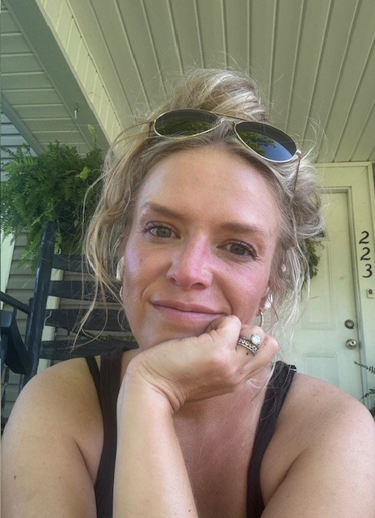

My name is Coty Paul, and I am from southeastern Kentucky. I teach secondary English at Whitley County High School. I have been teaching for ten years.
I love Jesus, sunshine, and thrifting. My walk with the Lord began the summer I was eleven.
I attended a Vacation Bible School at a local church, and it was there that I made the decision to accept Jesus as my savior.
My journey with God has not been one of rainbows and roses, but I can say with the utmost sincerity that He has been a most loving and faithful heavenly Father,
always seeking after me when I stray, sustaining me in my wilderness seasons, and loving me so much that it is incomprehensible. |
 |